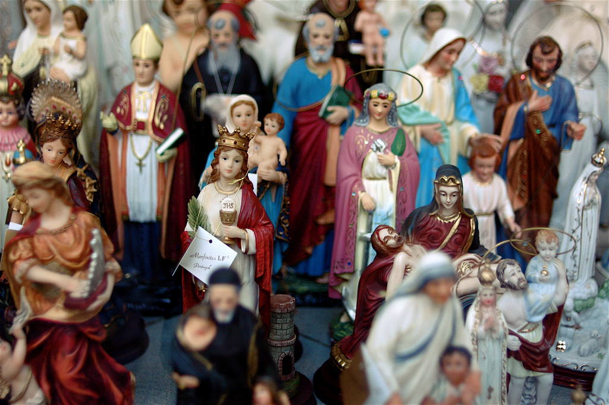

Friday, December the 23rd, 2011
back to: title, date or indexes
Christmas is now almost upon us, so it's about time the Hooting Yard Advent Calendar got devotional. What better image to concentrate our minds on holiness than this heteroclite jumble of saints, martyrs, bishops and BVMs, snapped by Salim Fadhley?
